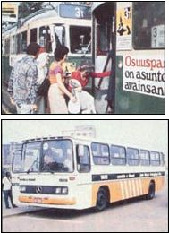
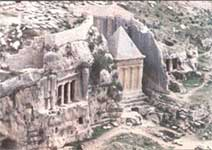
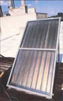
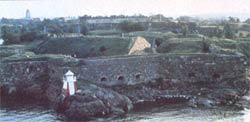
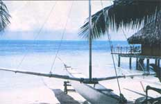

Journeys We Know You'll Enjoy
By the Mother Earth News editors
November/December 1980
Brazil . . . Israel . . . Finland . . . Denmark . . . England . . . France . . . the South Seas . . .
MOTHER's ever-expanding program of "tours that teach" has some very special offerings in 1981. However, you'll have to act quickly if you want to be included on our first trip of the year: a January 16 to February 1 junket into South America's summertime . . . to take a look at Brazil's national program for converting to a renewable fuels economy!
A TROPICAL VACATION
Just imagine! When snow blankets the north, you can be traveling up the Amazon to Manaus, an old rubber boom town in the heart of a jungle that's alive with exotic plants, animals, butterflies and birds.
And - while friends left behind don their heaviest winter apparel - you'll wade in warm tidal pools on the reef-sheltered beaches that border the old colonial city of Recife. Then, when you've had your fill of the brilliant sunshine and dazzling social life on Rio's "powdered sugar" shore, you might cruise over to Paqueta Island for a bicycle ride through quaint, flower-filled streets . . . stopping to cool off in an ancient cemetery where candles flicker in the mossy gloom.
All by themselves, such attractions would make MOTHER's trip to the Land of Liquid Sunshine the vacation of a lifetime. But besides visiting beaches, cathedrals, and sidewalk cafes, we'll be investigating the distilleries - large and small - that turn various Brazilian crops into alcohol fuel . . . which either provides "20%" gasohol for Brazilian cars or is used, in its pure state, to run totally alcohol-powered vehicles.
We'll see the factories (GM, Ford, and Volkswagen) that produce the new "ethanol" cars, too, and drop by Mercedes-Benz to check out the experiments that firm is conducting with sources of renewable diesel fuel. We'll also stop at the research facility that played such a big role in Brazil's alcohol fuel program (see "Brazil's Aerospace Technical Center" in MOTHER NO. 65, page 131). We'll talk to scientists, engineers, and government officials about their future plans . . . and investigate the ecological impact that the renewable fuels revolution is expected to have on the country.
This unique tour costs $2,395 . . . including airfare from Miami plus hotels, land costs, and breakfasts. But if you want to be part of it, you should contact us - and get your $100 deposit in the mail - immediately, since our closing date is November 17.
ANOTHER SUNNY SOJOURN
Of course, those who can't take advantage of that "winter getaway" can still follow the sun . . . on our second Solar Tour of Israel (which will run from February 18 to March 3, 1981), conducted in cooperation with Jordan College and Solar Age magazine.
This trip, too, will be a perfect mixture of touring and technology, because - besides exploring Jerusalem, Jaffa, Masada, Caesarea, and the Nabatean desert ruins - we'll meet Dr. Harry Tabor, one of sun power's earliest pioneers . . . visit the Ben Gurion University Desert Research Institute . . . talk with the Director of Research and Development at Hebrew University . . . look into the research being conducted at the Technion (Israel's equivalent of M.I.T.) . . . and view the glittering varieties of solar collectors in use there.
And that's just a sampling of the solar knowledge we'll gain (with plenty of time left over to browse in enchanting bazaars . . . sun in seaside resorts . . . and sample Tel Aviv's exciting night life).
The cost of this packed-full package is only $1,545, including airfare from New York and all land costs except lunches and dinners . . . and a $200 deposit ($100 refundable if you cancel) will hold your place.
SPRING IN SCANDINAVIA
The first thing you'll see when our Scandinavian Airlines jet lands in Finland next spring will be mint green fields, overflowing with thousands upon thousands of dandelions, set against a background of leafy white birch and dark green fir trees . . . all providing a fine welcome to participants in our Scandinavian Crafts Tour, which will take place from May 5 through May 22, 1981.
This trip will be under the direction of Don Wilcox, who has written 14 books on Scandinavian crafts ( his Finnish Design: Facts and Fancy won the 1974 National Book Award in Finland). The tour will include visits to museums and craft guilds, and offer the opportunity to meet with dozens of top Scandinavian artisans. The Friends of Finnish Handicrafts, a rya weaving guild, will even host a lunch for us while we're in Helsinki, and the National Sauna Society will treat us to a relaxing stop in a Finnish sauna.
From Finland, we'll move on to Denmark. After covering the craft scene in Copenhagen, we'll set out by ferry to explore the Danish islands, staying in picturesque country inns while we enjoy the area's music, castles, Viking graveyards, and thatched-roofed villages . . . and learning from skilled craftsmen and - women as we go.
Despite the high prices that currently exist in Scandinavia, we are able - by taking advantage of local, as opposed to more "touristy" accommodations - to offer this wonderful experience for around $1,850. And that includes airfare from New York, hotels, land costs, and many meals. You can reserve a spot with a $100 deposit, $50 of which is refundable if you cancel.
SUMMER IN ENGLAND AND FRANCE
Since 1956, France has been pioneering in the field of photovoltaic research, and - as of March of 1978 - a new government agency, the Commissariat à l'Énergie Solaire, has had full authority over that country's national solar energy program. In 1979, the Commissariat's $64.9 million budget was used to promote research and improvements in biomass technology, solar power stations, photovoltaics, and solar heating and cooling.
With that kind of background and support, France has made some mighty strides in solar development. . . so we're again joining Jordan College on a tour that will take us from the International Solar Energy Society conference in Brighton, England ... on to Paris ... and down through the French countryside to the Pyrenees and the Côte d'Azur, once more combining sightseeing with the study of the latest advances in solar technology.
The cost of this trip - scheduled for August 23 to September 6 - is still holding at an incredibly low $1,100, including airfare from New York and all land costs except lunches and dinners . . . with a $200 ($100 refundable after cancellation) deposit required.
NEXT WINTER IN THE SOUTH SEAS
We felt we had to come up with something super for our final tour of 1981 . . . and we did: a South Seas Seminar with Paul and Anne Ehrlich and John and Cheri Holdren . . . from November 27 to December 11, 1981!
We'll be visiting the enchanting Society islands of Bora Bora and Raïatéa. There - in clear, calm waters protected by barrier reefs - we will spend the mornings snorkling and studying the ecology and lifestyles of colorful reef fishes under the guidance of our knowledgeable tour leaders. In the afternoons we'll be free to relax and explore, and then - on ten separate evenings - Paul and Anne, John and Cheri will hold seminars on such subjects as basic ecology and ecosystems, human population growth, the world food problem, the effects of toxic substances on ecological systems, and more!
This opportunity to study a beautiful, delicate environment at its best, gain access to the thoughts of some remarkable scientific minds, and enjoy a taste of paradise will cost around $2,300 . . . including airfare from Los Angeles, hotels, and some meals. Inquiries about the tour are already coming in, so - if you want to participate - send us your deposit of $100 ( $50 is refundable upon cancellation) today!
All deposits should be in the form of certified checks or money orders and sent to Mother's Tours, P.O. Box 70, Hendersonville, North Carolina 28791. ( We'll also be happy - at your request - to put your name on our tour mailing list.)
In the meantime, we're still working on the possibility of a second China tour, in 1981. Stay tuned to future issues for further information, and for a report of our (already underway, as this article is written) 1980 China expedition!
|
 TOP: Traveling by tram in Helsinki? ABOVE: Brazil is already using alcohol-powered buses |
 Ancient tombs in Israel's Valley of Kidron |
 The Princess Marina Hotel in Netanya operates Israel's largest commercial solar heating system. |
|
 The historic Suomenliina Castle in Finland. . . |
 One of that South Sea island's exotic hotels.. |
 TOP: An outrigger graces a lovely beach on Bora Bora ... ABOVE: MOTHER's explorers will spend their days examining tropical reefs and fishes. |